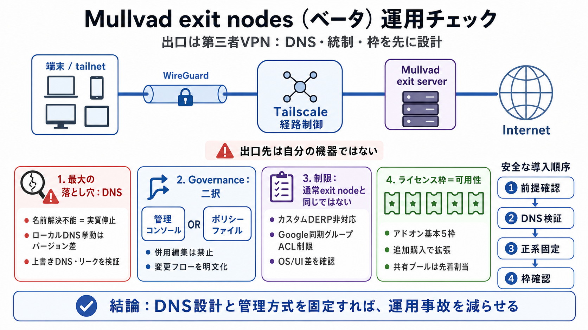

Mullvad exit nodes · Tailscale Docs
This feature is currentlyin beta. To try it, follow the steps below to enable it for your network using Tailscale v1.48.…

This feature is currentlyin beta. To try it, follow the steps below to enable it for your network using Tailscale v1.48.…
Continue through the checkout flow to purchase Mullvad licenses. Licenses cost $5 per month for every 5 devices you wish…
Neither the Mullvad admin page nor the `tailscale exit-node` command provide any hints. The `tailscale lock` command pro…
In particular, their documentation points out that DNS leaks could be expected to occur in certain exit node configurati…
$ tailscale exit-node list IP HOSTNAME COUNTRY CITY STATUS 100.91.198.95 al-tia-wg-001.mullvad.ts.net Albania Tirana - 1…